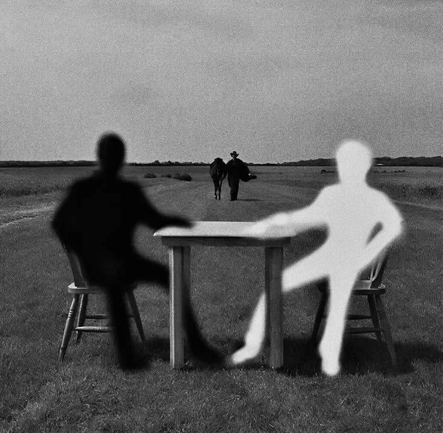

Have a reason.
Write your market context, setup conditions, invalidation, and risk before you practice.
Start a practice session ↗
A PERSONAL JOURNEY. A BIGGER VISION.
The ambition is personal. The process is daily.
A space to study the markets, think bigger, and turn what you learn into something real.
01 — THE PROCESS
A stronger future starts with what you practice today. Keep your trading, learning, and building connected in one personal workspace.
Study market structure, test your setups in replay, and review the evidence behind every decision.
Open Backtesting Lab ↗Explore books on psychology, money, and entrepreneurship. Capture an idea. Put it into practice.
Explore your library ↗Turn a useful skill into an experiment. Solve a problem, record what you learn, and take the next step.
Open Builder’s Desk ↗THE PERSON BEHIND THE PROCESS
A desk. A notebook. A laptop.
A bigger idea of what life can become.

 A WORK IN PROGRESS.
A WORK IN PROGRESS.“One day, I will be somewhere I once only imagined.Keep your own vision alive ↗
Today, I’m doing the work that gets me there.”
02 — THE BOOKSHELF
Books to help you think clearly, handle uncertainty, and create value. Read the idea. Question it. Make it useful.
Open the full learning library ↗03 — YOUR REASON WHY
The car. The freedom. The business with your name on it. Give your ambition a place—then give it a practical next step.
Define what enough means to you. Map essential expenses, build a saving habit, and choose one action that increases your options.
04 — THE DAILY STANDARD
A repeatable rhythm for the trader, the student, and the entrepreneur you’re becoming.
Write your market context, setup conditions, invalidation, and risk before you practice.
Start a practice session ↗Save screenshots and reasoning. Separate a good decision from a lucky outcome.
Open your trade journal ↗Review the week. Connect a lesson from a book or a trade to something you’ll do differently.
Write a weekly review ↗THE LIFE AROUND THE MARKETS
Keep the beautiful things in the vision. Make room for the freedom, skills, relationships, and peace that give them meaning.
Time for the people you love. Space to think. The ability to choose what matters next.
Define your version of enough ↗Grow your coding skills. Test a useful product. Create something that solves a real problem.
Start a small experiment ↗Sleep, movement, good company, and a life outside the screen belong in the plan too.
Make space in your weekly review ↗
A CONVERSATION WITH THE FUTURE
“I don’t need the whole journey figured out.
I need to keep the next promise I make to myself.”
Read a few pages. Review a trade honestly. Build one small thing. Keep showing up for the life you want.
Write your next chapter ↗Original MyTradingJourney reflections.YOUR NEXT CHAPTER STARTS WITH AN ACTION.
Your practice. Your ideas. Your private workspace.